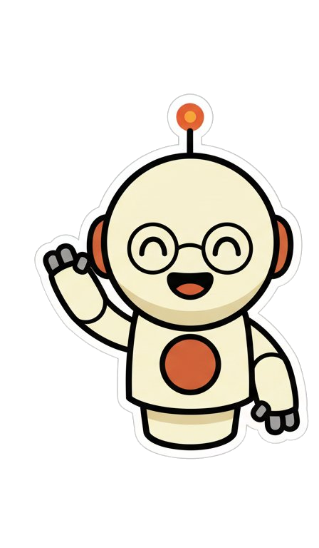

A byte-faithful, timestamped record of how intent becomes code. Every .aide file is a contract — scope, outcomes, guardrails — that cascades through your stack.

1200 × 630 PNG. Capture the .og element only (no labels, no notes).assets/expo-wave.png — keep the same filename once deployed to public/.JetBrains Mono (already used site-wide). Embed or self-host before static export so OG cards render outside the browser.<head>:
<meta property="og:image" content="https://aidemd.dev/og.png" /> <meta property="og:image:width" content="1200" /> <meta property="og:image:height" content="630" /> <meta property="og:title" content="AIDEMD.DEV — intent is the source" /> <meta property="og:description" content="A byte-faithful record of the .aide methodology. Intent becomes code." /> <meta name="twitter:card" content="summary_large_image" /> <meta name="twitter:image" content="https://aidemd.dev/og.png" />
<h1>, the chip row, and the bubble copy; everything else stays.